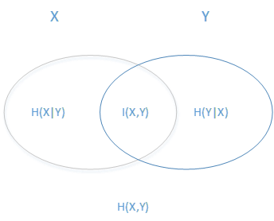

夏普比率最大化分类器
- 线性回归简单介绍
- logistic函数的由来
- 为什么称为夏普比率最大化分类器
- Pseudo R-Squared

*交叉熵损失函数*
信息论相关基础知识回顾
- 信息量衡量一个随机事件所包含的信息大小：$I(X)=-log(p(X))$
- 熵用来衡量随机变量所包含的信息的不确定性：$H(X)=E[-log(p(x_i))]=-\sum_{i=1}^{n}p(x_i)log(p(x_i))$
- 推广到多个随机变量的联合熵：$H(X,Y)=-\sum_{i=1}^{n}p(x_i,y_i)log(p(x_i,y_i))$
- 类似于条件概率，条件熵度量给定一个随机变量后另一个随机变量的不确定性：$H(Y|X)=-\sum_{i=1}^{n}p(x_i,y_i)log(p(y_i|x_i))$ $$H(Y|X)=H(Y,X)-H(X)$$
- 相对熵 (Relative entropy)，也称KL散度 (Kullback–Leibler divergence)。设$p(x),q(x)$是离散随机变量的概率分布函数，则$p对q$的相对熵为： $$D_{KL}(p||q)=\displaystyle\sum_{x}p(x)log\frac{p(x)}{q(x)}=E_{p(x)}[log\frac{p(x)}{q(x)}]$$ 相对熵可以用来衡量两个概率分布之间的差异，上面公式的意义就是求p与q之间的对数差在p上的期望值
- 交叉熵 (Cross entropy), 现在有关于样本集的两个概率分布p(x)和q(x)，其中p(x)为真实分布，q(x)为非真实分布，如果用非真实分布q(x)来表示p(x)，所需的编码长度定义为交叉熵：$$H(p,q)=\displaystyle\sum _{x}p(x)log\frac{1}{q(x)}$$ $$D_{KL}(p||q)=H(p,q)-H(p)$$
信息论基本概念图解
逻辑回归中的损失函数即为交叉熵
回想逻辑回归中的损失函数：$$J(\theta)=-\sum\limits_{i=1}^{n}(y^{(i)}log(sigm(\theta x^{(i)}))+ (1-y^{(i)})log(1-sigm(\theta x^{(i)})))$$
交叉熵定义为：$$H(p,q)=\displaystyle\sum _{x}p(x)log\frac{1}{q(x)}$$
广义线性模型解释 $$\begin{align}f(y) &= p^y (1 - p)^{1 - y} \\&= (1 - p) \exp \left \{ y \log \left ( \frac{p}{1 - p} \right ) \right \} .\end{align}$$
从业务层面解释逻辑回归
在逻辑回归中，我们实际上是对$log(\frac{P(y=1|x)}{P(y=0|x)})$建模
$P(y=1|x),P(y=0|x)$分别代表在给定输入特征$x$下，我们预测其为正样本或负样本的概率。
一般的业务环境下，我们会对正样本更加感兴趣。正样本预测正确会给我们带来收益，同时预测错误会带来风险。
所以，逻辑回归帮助我们对收益风险比建模，最小化损失函数也就意味着最大化收益风险比，这在金融领域有一个类似概念称为夏普比率。
在企业用户价值评估模型中的评分卡模型；在互联网运营中的广告点击率预测中，逻辑回归都有着非常广泛的运用。
$Pseudo-R^2$
- $R^2$ ，即决定性系数，用来衡量线性回归模型对待估测的随机变量拟合的好坏程度。
- 一个通用的解释是：待估随机变量的波动性有百分之多少可以由模型解释。
- 在逻辑回归中，由于引入了非线性转换，且所预测的是分类变量。所以引入了$pseudoR^2$的概念。
- $Pseudo-R^2$的一种常用计算方法为：$$Pseudo R^2=1-\frac{ln(L_M)}{ln(L_0)}$$，其中$L_M$指的是模型的最大似然值，$L_0$是指无模型的情况下的似然值。
Machine Learning
Applications and practices